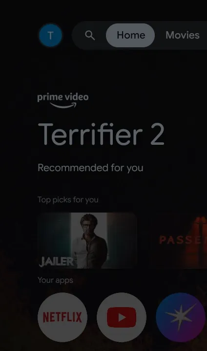
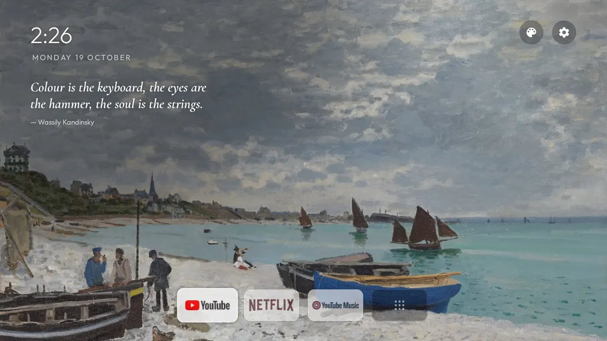
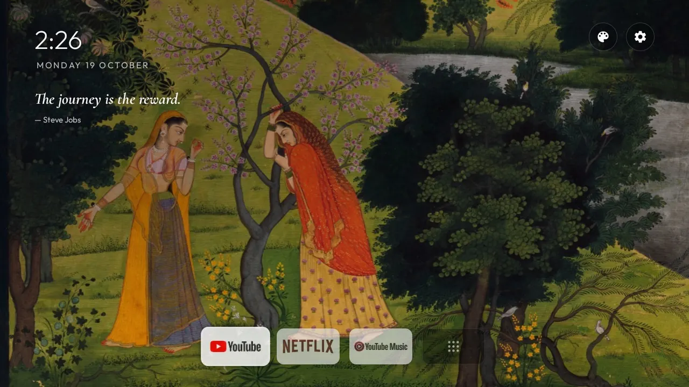
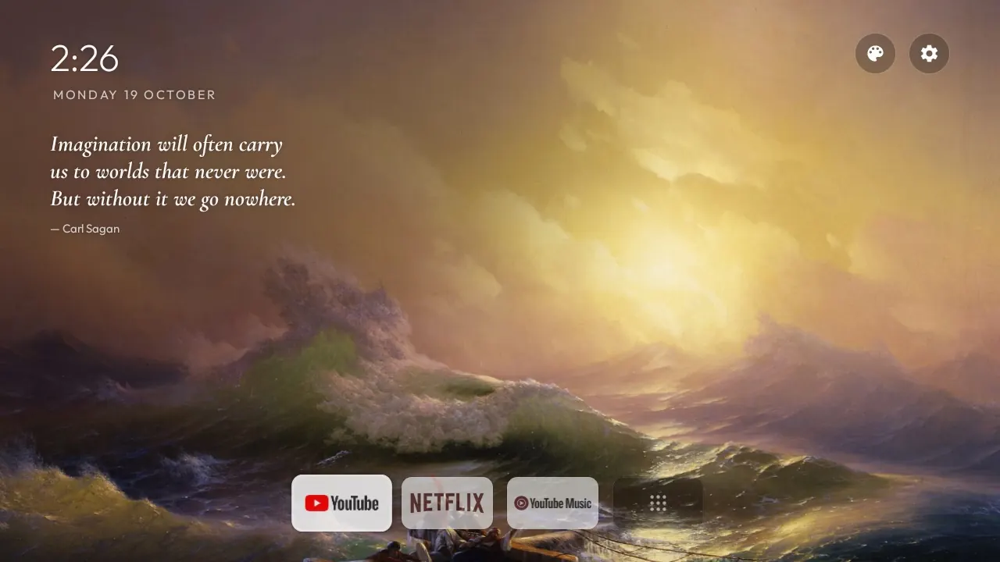
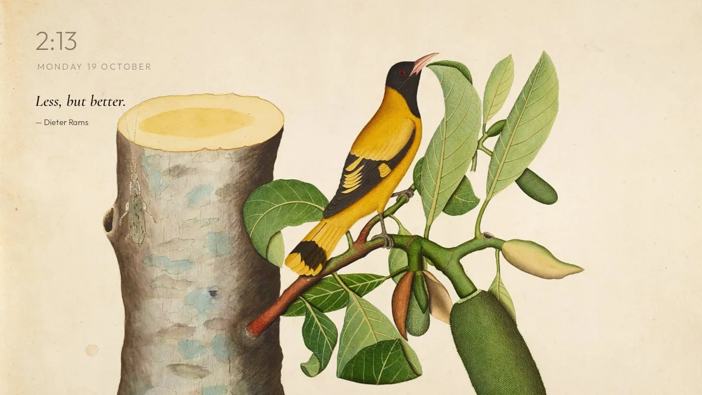
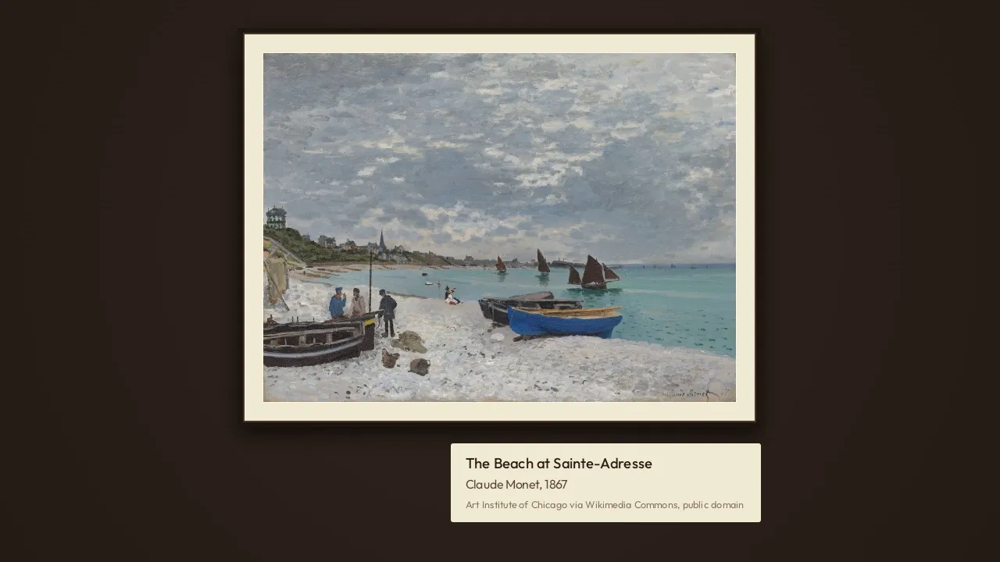
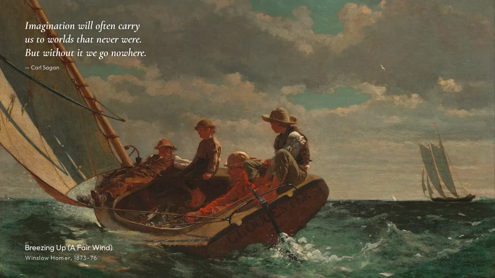
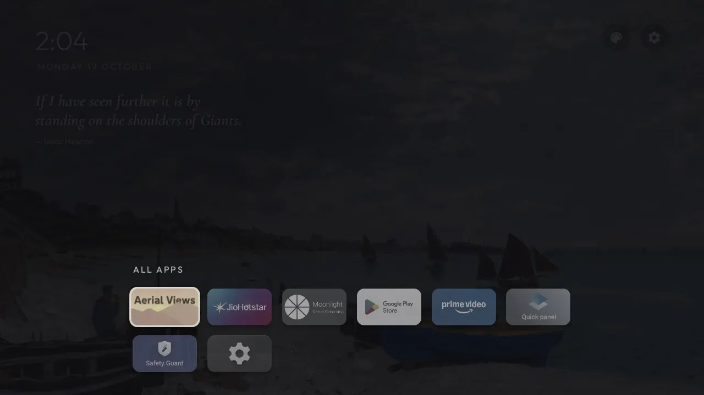
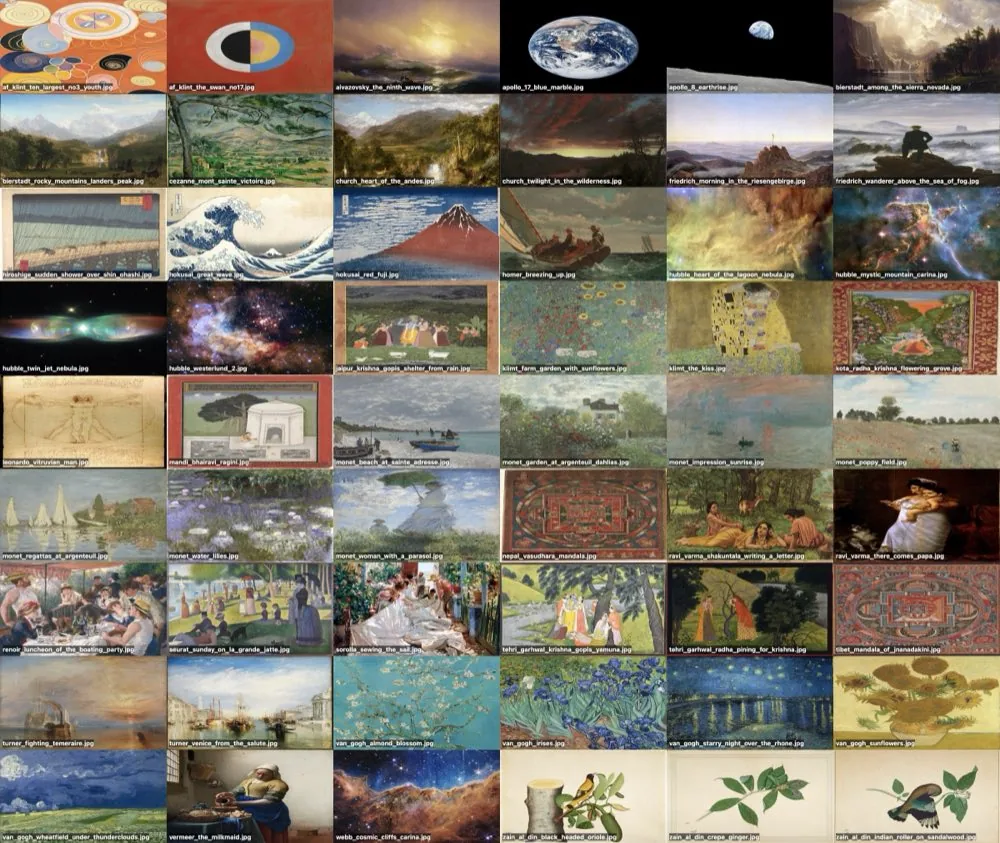

Art first.
A public-domain painting fills the screen and changes every 45 seconds, with a slow pan and zoom. The clock, quote and dock stay small. The quote's ink changes with each painting: dark on light paper, white on dark or busy ones.
A home screen for Android TV and Google TV that shows a painting until you want to watch something.
The stock Google TV home is mostly ads and recommendations. tv-home has no network access and no accounts. It shows a painting, the time, a quote and the apps you installed.





A public-domain painting fills the screen and changes every 45 seconds, with a slow pan and zoom. The clock, quote and dock stay small. The quote's ink changes with each painting: dark on light paper, white on dark or busy ones.
After 8 seconds without a key press, the dock and the buttons fade and the clock dims. The first key press only wakes the screen, so you never open an app by accident.

The palette button opens one painting at a time in a frame with an ivory mat, on a walnut wall, with a museum plaque. Left and right on the remote move between paintings.

The screensaver is the home screen with nothing else on it: the painting and the quote, with the painting's title, artist and year. The framed gallery and a plain drifting clock are the other two.

The dock holds up to five apps. The last tile opens every installed app over the dimmed painting. Hold OK on a tile to add it to the dock, move it, or take it out.
Monet, Van Gogh, Hokusai, Klimt, Turner, Indian miniatures, Himalayan mandalas, and NASA, Hubble and Webb images. All public domain or CC0. The 31 wide ones rotate on the home screen. Art mode and the screensaver show all 54.

The TV's ads, recommendation rows, demos and telemetry are switched off, and the apps you don't use are removed. One script puts it all back. No root, no flashing.
Plain Java, no blur, no video, no background services. The home screen uses less than half the memory of Google TV's own launcher.
A small Mac menu bar app drives the TV over adb, and a phone on the same Wi-Fi gets the same buttons from a page the Mac serves.
Set up github.com/triptu/tv-home on my TV. Follow PROMPT.md in that repo.
The README covers the rest: changing the dock, adding your own art, and undoing the setup.
Works on Android TV and Google TV with Android 8 or later. Not Samsung, LG or Fire TV.